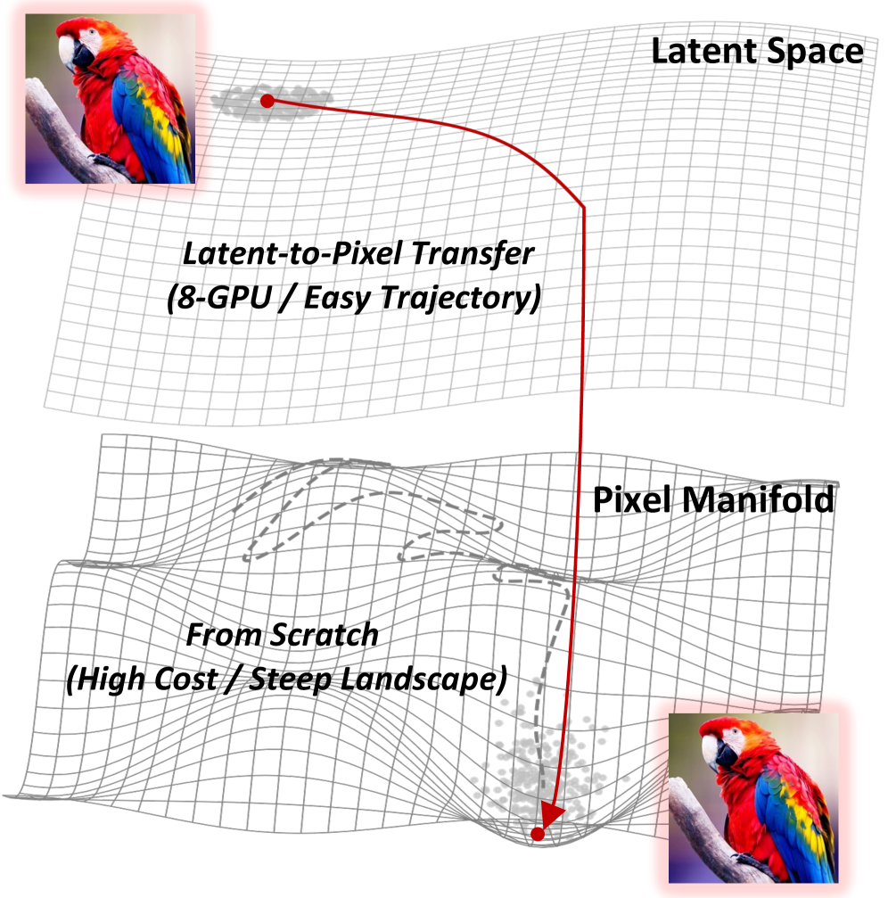
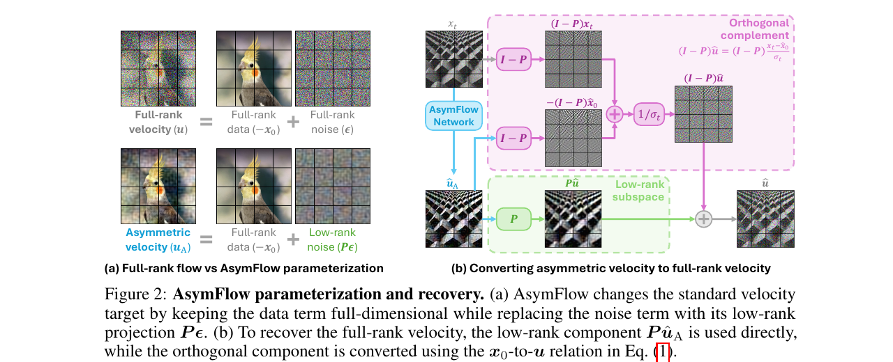
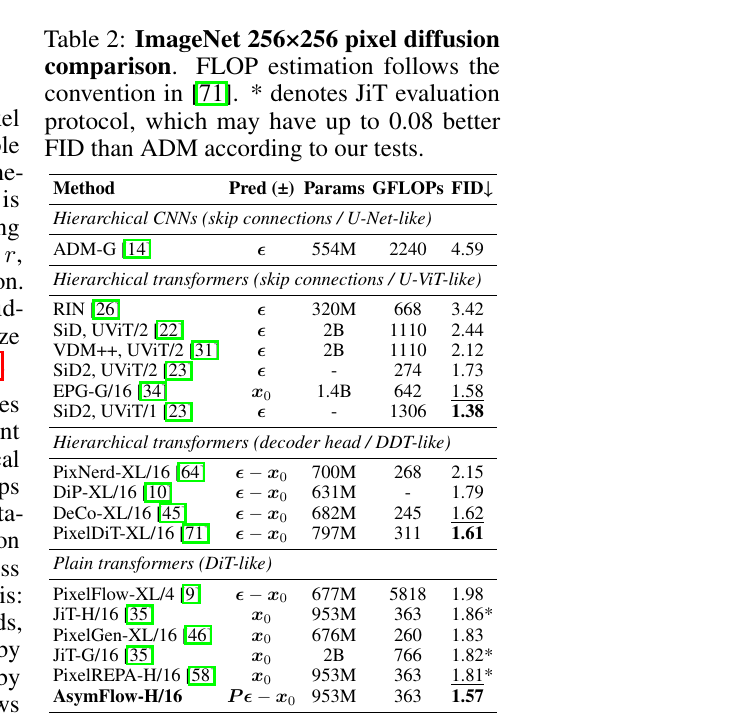

Latent → Pixel 迁移:
AsymFlow vs L2P, 同问题、同月份、完全不同的刀法


1. 同一个问题
2025 下半年到 2026 上半年, 像素扩散 (pixel diffusion) 这条线突然变热, 一批工作 (JiT、PixelGen、PixNerd、DeCo、PixelDiT、DiP、PixelREPA、PixelFlow) 都在挑战"VAE 压缩到 latent 再扩散"的主流路线。理由很硬, 跟两篇论文都讲的一致:
- VAE 是有损的。8× 或 16× 下采样 + 16-channel latent, 砂砾、毛发、皮肤毛孔这些频谱上的高频信号砍掉一大半。decode 回来就是"AI 磨皮味儿"。
- VAE 内存是 H×W 二次方。原生 4K (3840×2160) 时 decoder 单步就把 80GB H100 打爆。LDM 跑 4K 都要 tile + seam blending, 是工程苦活。
- VAE 跟生成器解耦。decode 出来的细节是 fixed VAE decoder 决定的, 生成模型再强也无法控制最后那一步。
但从零训像素扩散的成本是 latent 路线的几倍 — 几百张高端 GPU, 数十亿图文对, 才能勉强追平 LDM 的语义和构图能力。所以核心矛盾变成了:
能不能复用一个已经训好的 latent 大模型 (FLUX.2, Z-Image, SD3, ...) 的知识, 把它"搬到"像素空间, 而不是从头爬?
AsymFlow 和 L2P 都是回答这个问题, 上传只差一天 (5/12 vs 5/13), 但它们选择"动哪里"完全不一样。这就是本文要拆的事。
2. 两套"刀法"
2.1 一句话总结
| 维度 | AsymFlow (Loss 层) | L2P (架构层) |
|---|---|---|
| 动什么 | 动 velocity 参数化的 target — 让网络只预测低秩子空间内的噪声 | 动架构 — 抛 VAE, 加大 patch, 冻结中间层, 加 Detailer Head |
| 不动什么 | 架构、training loop、sampling 协议全保持; plain DiT, 一字不改 | 训练目标 (flow matching MSE) 标准; 中间 DiT block 完全冻结 |
| 核心数学 | $u_A := P\boldsymbol\epsilon - \mathbf x_0$, $P = AA^\top$, $A$ 是 PCA 或 Procrustes basis | $v_\theta$ = DiT (frozen) + 浅层可训 + Detailer Head; 训练用 LDM 自生成数据 |
| 核心代码 | asymflow.py + common.py (orthogonal_decomposition + velocity recovery) ≈ 200 行 |
z_image_dit_L2P.py (大 patch + freeze + MicroDiffusionModel) ≈ 800 行 |
2.2 数学本质
AsymFlow 的整个论文可以浓缩成一个等式 (Eq. 3 + Eq. 5):
—— 翻译: 训练时网络只预测 非对称速度 $u_A$ (噪声项已降维到 rank-$r$); inference 时通过几何还原成 full-rank velocity $u$, 喂进标准 sampler。两端: $r{=}0$ 是 $x_0$-prediction, $r{=}D$ 是 $u$-prediction, 中间是新东西。

L2P 的整个论文可以浓缩成一张架构图 + 一个训练数据选择:
架构: \(\text{pixel image} \xrightarrow{\text{16×16 patch}} \text{token seq} \to \underbrace{\text{DiT (frozen)}}_{\text{源 LDM 中间 28 层}} \to \text{Detailer Head (U-Net)} \to \text{velocity}\)
训练数据: 源 LDM 自己生成的 20k 张合成图 (而不是真实图)。理由是源 LDM 已经把数据流形"平滑过", 学生学的是它自己能产出的分布。

2.3 架构概览 (并排)
把两者放到同一张概念视角:
| 层级 | AsymFlow | L2P |
|---|---|---|
| 输入端 | 像素图 → patchify (16×16) → Linear (input projection, 训) — 跟 latent base 完全一致, 只是 $A^\top$ fuse 进权重 | 像素图 → patchify (16×16) → Linear (input projection, 训, 全新初始化) |
| 主干 | 所有 transformer block 复用 latent base (FLUX.2 klein 9B), 加 rank-256 LoRA 微调 | 中间 28 层全冻, 只首尾各 $n$ 层 + input projection 可训 |
| 输出端 | Linear (output projection, 训, $A$ fuse 进权重) → unpatchify → 还原 $\hat u_A$ → 几何还原 $\hat u$ | Output projection → unpatchify → Detailer Head (轻量 U-Net, 4 级下采+上采) → $\hat v$ |
| 本质改造点 | 修改 target ($u \to u_A$); 网络 internals 不变 | 修改 架构 (加 Detailer Head); target 不变 |
这是个非常 telling 的对称: AsymFlow 改 loss 而不改架构, L2P 改架构而不改 loss。两条路殊途同归 — 都是"复用 latent base + 补一小段差距", 但补差距的地方不一样。
3. 维度对比
3.1 改造在哪一层 — loss vs architecture
AsymFlow 的改造发生在 loss/target 这一层。具体地, training loop 不变 (前向加噪 → 跑网络 → loss 反传); 唯一的区别是 target 从 \(u\) 变成 \(u_A\), 同时增加一个解析的"恢复操作" (orthogonal_decomposition + velocity 重组), 这一步是可微的纯线性代数, 跑在 GPU 上几乎零开销:
repo/lakonlab/models/architectures/asymflow/common.py:L48-L72 — full-rank velocity 还原
def asymflow_velocity(self, u_a_packed, x_t_packed, calibration):
u_a_subspace, u_a_complement = self.orthogonal_decomposition(u_a_packed, proj_buffer)
x_t_subspace, x_t_complement = self.orthogonal_decomposition(x_t_packed, proj_buffer)
# low-rank subspace: u-style
u_subspace = sk * u_a_subspace + (1 - sk) / sigma_clamped * x_t_subspace
# orthogonal complement: x_0-style, recovered via 1/sigma
u_complement = (x_t_complement + s * u_a_complement) / sigma_clamped
return u_subspace + u_complement
L2P 的改造发生在 架构这一层。新增的"Detailer Head"是一个完整的 4-stage U-Net, 显式注入到 DiT 后端:
repo/diffsynth/models/z_image_dit_L2P.py:L281-L350 — Detailer Head (U-Net) 结构
class MicroDiffusionModel(nn.Module):
def __init__(self, in_channels, si_t_hidden_size):
super().__init__()
self.enc1 = nn.Sequential(nn.Conv2d(in_channels, 64, kernel_size=3, padding=1), nn.SiLU())
self.pool1 = nn.MaxPool2d(2, stride=2)
# ... enc2/3/4: 64→128→256→512, 每级下采 2× ...
self.bottleneck = nn.Sequential(
nn.Conv2d(512 + si_t_hidden_size, 512, kernel_size=1), # ← 拼接 DiT 特征 (3840 ch)
nn.SiLU(),
)
# 4 级上采样 + skip, 512→256→128→64→3
暗示: AsymFlow 路线如果换 base, 只需要重新做 PCA 或 Procrustes 重新算 \(A\), 模型代码不动。L2P 路线如果换 base, Detailer Head 的通道数要根据新 base 的 hidden size 调整, 训练 hyperparam 要重新 sweep。AsymFlow 更"通用", L2P 更"绑定"。
3.2 VAE 怎么处理
| AsymFlow | L2P | |
|---|---|---|
| VAE 在 pipeline 里 | 训练时需要 VAE — 用来 encode 真实图得到 latent token, 跟对应像素 patch 配对去做 Procrustes 对齐。inference 时 VAE 在 input/output projection 里以 $A^\top$/$A$ 的形式"被吸收" | 训练和 inference 完全不需要 VAE — 像素直接 patchify 喂进 DiT, 输出经 Detailer Head 还原 |
| 底层假设 | latent space 跟 pixel patch 之间存在一个正交线性 lift。FLUX/SD3/Z-Image 这种标准 VAE 满足; RAE (latent 对齐 DINOv2 feature) 不满足 (论文自己承认) | 源 LDM 的 attention pattern 跟 token 是"latent"还是"pixel patch"无关 — 只跟 sequence shape 有关。这点要求 patch size 跟 latent token 数对齐 (e.g., 1024px 用 16×16 patch = 64×64 sequence, 跟 latent 64×64 一致) |
| 内存优势 | inference 时 $A$ 是 $D \times d$ 矩阵 (e.g., 768×128), 比 VAE decoder 轻几个量级 | 4K 推理时间砍 97.67% (51.14s → 1.19s), 峰值显存降 38.81% (43.78GB → 26.79GB)。因为彻底没有 VAE decoder 的 O(H²W²) 内存爆炸 |
这里的差异其实是"VAE 是否被显式使用"和"VAE 的功能在哪一步被取代"。AsymFlow 把 VAE 的 encode/decode 都抽象成 \(A\) 的线性映射, 数学上是同一回事但实际推理代价小很多。L2P 则从训练开始就没用过 VAE, 自然也省了 inference 时的 VAE 开销。但是 AsymFlow 仍然需要 VAE 来构造训练时的 latent-pixel 配对, L2P 不需要。
3.3 训练数据
这是两篇论文最反差的部分。
AsymFlow: T2I 微调用 3M LAION-Aesthetics 真实图, captions 用 Qwen2.5-VL 重新打过。ImageNet 实验用真实 ImageNet。"Real data is the gold standard"。
L2P: 训练数据是 源 LDM 自己生成的 20k 张合成图。完全没有真实图像。论文 Fig 9a 消融:
- Source data (LDM 自生成): 最快收敛, 最高分数
- Cross-model data (用 GLM-Image 等别的 T2I 生成): 中等
- Real data (UltraHR-100K): 收敛慢, 分数低
L2P 的论点: 源 LDM 生成的图本来就在它自己的输出可达域里, 学生 (L2P) 只需要补"latent → pixel"这一小段映射, 不需要解决"真实图也能被这套 DiT 表达"这个大问题。这是 distillation 思维 — 学生学的是 teacher 输出的分布, 而不是数据分布。
AsymFlow 的论点 (隐性): Procrustes lift 已经把 latent base 的能力显式数学迁移了, 微调阶段你应该用真实数据去"突破" latent base 的天花板, 而不是"对齐到它"。如果只学 latent base 的分布, 你的 pixel 模型 ceiling 就是 latent base — 但 AsymFLUX.2 klein 在 HPSv3/DPG/GenEval 上全面超过 FLUX.2 klein base, 说明这个 ceiling 被突破了。
谁对? 这是个有趣的开放问题。我的猜测: L2P 用合成数据 work 是因为它的 capacity 小 (Z-Image-Turbo + 小 head, 主体冻结), 学的本来就是"latent base 已经能做的事 + 像素细节"; AsymFlow 用真实数据 work 是因为它的 capacity 大 (9B + 全主干 LoRA), 需要真实数据才能突破 base。两者在各自的 capacity 区间里都对。
3.4 算力 / 规模
| AsymFlow | L2P | |
|---|---|---|
| Base 模型 | FLUX.2 klein Base 9B (Black Forest Labs, 私有权重) | Z-Image-Turbo 6B (Z-Image Team, 公开) |
| 微调规模 | Input/output projection 全量 + 主干 rank-256 LoRA ≈ 几百 M trainable | 首尾若干层 + Detailer Head ≈ 百 M 级 trainable (中间 28 层冻结) |
| 训练数据 | 3M LAION-Aesthetics 真实图 | 20k 合成图 (源 LDM 生成) |
| GPU 数量 | 未明确披露 (config 名是 asymflux2_klein_32gpus.py, 推测 32×H100 级别) |
明确 8×GPU, 8 卡可复现 |
| 训练步数 | ImageNet 600 epochs ≈ 750k iters; T2I 10K iters (Table 3 ablation 用的) | 20k 步 sufficient (Fig 9c) |
| 原生 4K | 未支持 — 论文聚焦 1024×1024 | 支持 native 4K, patch size 切到 64×64, shift 调到 ~5 |
结论很清楚: L2P 是"轻装解决方案" (8 卡能跑, 解锁 4K), AsymFlow 是"重装解决方案" (要 32 卡量级 + 私有 9B base, 但能突破 latent ceiling)。如果你算力受限或者目标是 4K, 选 L2P。如果你有顶级 base 模型 + 算力, 想吃尽 latent base 的所有能力, 选 AsymFlow。

3.5 推理流程
AsymFlow inference: UniPC multistep + APG (orthogonal-projection guidance) + dynamic shift。流程上跟 latent flow 完全一样, 只是网络输出多一步"非对称速度 → full-rank velocity"的解析变换。每步代价: ~1× latent flow step + 一个 patch-wise 矩阵乘。
L2P inference: 标准 flow matching sampler (Euler/Heun), 但每步要跑 DiT + Detailer Head 两个 forward。DiT forward 跟原 latent base 一样, Detailer Head 是个浅 U-Net, 但 H/W 是原图分辨率, 4K 时虽然没有 VAE decoder 但 Detailer 也是 4K 上跑卷积, 计算量不小 — 不过 L2P 论文证明这比 VAE decoder 便宜得多。
两者都不需要额外的 VAE encoder/decoder forward, 这是 pixel-space 路线相对 latent 的共同优势。
4. 结果对比
4.1 跑分数据
两篇论文都报告 DPG-Bench、GenEval、HPSv3, 可以直接对照 — 但注意 base 不同:
| 方法 | Base | HPSv3 ↑ | DPG ↑ | GenEval ↑ |
|---|---|---|---|---|
| FLUX.2 klein Base | latent (9B) | 9.50 | 85.2 | 0.80 |
| AsymFLUX.2 klein | pixel (9B from FLUX.2) | 10.66 | 86.8 | 0.82 |
| Z-Image-Turbo | latent (6B) | — | 84.86 | — |
| L2P (Z-Image-Turbo) | pixel (6B from Z-Image) | — | 86.00 | 0.93× source (保留 93%) |
| PixelDiT-T2I | pixel (from scratch) | 8.95 | 83.5 | 0.74 |
读数提示: AsymFLUX.2 klein 三个 benchmark 全面 超过 它的 latent base; L2P 在 DPG-Bench 上超过源 Z-Image-Turbo (+1.14), 但 GenEval 是保留 93% 而非超越。哪种"超越方式"含金量更高? AsymFlow 的"全面超过"更强, 但 L2P 的"用 8 卡轻量改造保留 93% 还涨 DPG"也是非常 impressive 的算力效率。两者不直接 comparable。
ImageNet 256×256 比较 (只有 AsymFlow 做了):

4.2 视觉质量
定性对比的关键观察:
- AsymFLUX.2 klein 的细节质感明显比 FLUX.2 latent base 真实, 而且保留构图 (Fig. 7 中 Qwen Image/FLUX.2 base 上的人脸有"AI 磨皮", AsymFLUX 没有)。
- L2P 跟 Z-Image-Turbo base 的肉眼差距更小 (它本来目标也是"保留 base 能力", 不是"超越"); 但原生 4K 输出没有"先 1MP 再超分"的 tile blur, 这是 L2P 独占优势。
- PixelDiT-T2I (两篇都拿来当 baseline) 是从头训的像素模型, 视觉上 noticeably 模糊 — 直接证明了"不复用 latent base 知识"的代价。

5. 哲学差异 + 决策树
5.1 "动得最少"是谁?
表面上看, AsymFlow 似乎"动得更少" — 整个 paper 的核心是一个 head 替换, training/sampling 不动。L2P 则显式加了一个 Detailer Head 模块。但仔细看, AsymFlow 的"不动"是 training-loop 层面的不动: forward/backward 还是 latent flow 那一套。 L2P 的"不动"是 梯度更新层面的不动: 28 层 DiT block 一个参数都不更新。两个意思的"不动"。
从可解释性角度看, AsymFlow 的"\(u_A := P\boldsymbol\epsilon - \mathbf x_0\)"是形式化的设计, 有清晰的几何解释; L2P 的"freeze + Detailer Head"是架构层面的启发式工程, 解释更多依赖消融表 (Fig 9b 证明 freeze 是对的, Fig 9c 证明 20k 步够了, Fig 9a 证明合成数据是对的) — 你能测量它 work, 但不容易从第一性原理推出来。
5.2 互补 vs 互斥
两个方案互不冲突。原则上你可以:
- AsymFlow + L2P 的 Detailer Head: 用 AsymFlow 的非对称参数化做 base, 再加一个 L2P 风格的轻量 U-Net 处理像素细节 — 子空间内 \(u\)-style 控制语义, Detailer Head 补 sub-patch 细节。论文没做这个组合, 但理论上可行。
- AsymFlow 的 Procrustes + L2P 的合成数据策略: 用 Procrustes 初始化, 然后用合成数据微调 — 减少真实数据收集成本。论文没做。
- AsymFlow 的 σ_min 稳定性优势 + L2P 的 native 4K 架构: 数值稳定性是个独立的 win, 完全可以套到 L2P 上去。
所以这不是一场零和的"谁优谁劣"对决, 而是 两个不同切口的设计哲学。社区接下来很可能会有 "AsymFlow + L2P" 这种组合工作出现。
5.3 怎么选?
决策树, 按我的判断:
- 选 AsymFlow 如果:
- 你有一个 plain DiT 架构的 latent base (FLUX/SD3/Z-Image) 而且想完整复用它的能力, 包括 attention pattern 和所有 conditioning
- 你的目标是"在跑分上超越 latent base", 而不只是"保留并切到像素"
- 你能承担 32 卡量级的微调算力
- 你不需要 4K, 1MP 够用
- 你需要严格的数学解释来说服评审 / 老板 / 自己
- 选 L2P 如果:
- 你只有 8 卡, 但要做 T2I / 4K 生成
- 你的目标是解锁原生高分辨率 (4K 是 L2P 杀手锏)
- 你不能 / 不想收集真实训练数据 — 合成数据 self-distillation 是干净的 zero-real-data pipeline
- 你的 base 是 Z-Image / FLUX 这类标准 LDM, attention pattern 跟 token 序列长度强绑定
- 都不选, 选第三条路:
- 你的 base 是 RAE / DINOv2-aligned latent — AsymFlow 的 Procrustes 假设不成立, L2P 没在 RAE 上验过, 两个都有风险。需要 wait for follow-up 或自己改造。
- 你要做 video — 两篇论文都只做图像, 视频迁移要重新设计 (尤其 patch tokenization 在时间维度的 design space 没解决)。
5.4 共同的盲点
两篇都没回答的问题:
- VAE 真的没必要吗? AsymFlow 间接证明 VAE 可以被 \(A\) 这种正交线性映射代替; L2P 直接抛掉。但这两条路都预设了 latent 是有意义的中间表示 — RAE 这类"latent = DINOv2 feature"的方向, 两条路都不适用。下一代 latent 是不是该跟 pixel 完全解耦? 没人回答。
- "超过 latent base"是因为像素表达上限更高, 还是因为微调时遇到的真实数据更好? AsymFlow Table 3 的 controlled baseline 说 AsymFLUX 比 latent finetune HPSv3 涨 +1.16 (10.70 → 10.66, 实际略输 0.04 但 visual realism 明显更好) — 这个差距是"像素本身的优势"还是"特定 prompt set 上的细节质感"? 缺更系统的实验。
- \(r\) 怎么 scale? AsymFlow ImageNet 用 \(r{=}8\) (\(D{=}768\), ratio 1/96), FLUX 用 \(r{=}128\) (\(D \approx d \times \text{compression}\))。这个比例的选择没有理论指导, 完全是 sweep 出来的。L2P 这边类似问题: 首尾解冻多少层 (\(n\)), Detailer Head 用 4 stage 还是 5 stage, 都是 sweep。
- 合成数据 vs 真实数据的真正分水岭在哪? L2P 的 Fig 9a 在 Z-Image-Turbo + 6B 上的结论, 是不是能推广到 9B+ 的 AsymFlow setting? AsymFlow 没尝试合成数据, L2P 没尝试真实数据 — 没有 controlled cross-experiment。
未来一年会看到的:
- 把两套方法组合的工作 (AsymFlow head + L2P Detailer)
- 把这套迁移思路推广到 video (Wan, Sora, Veo 这类 latent 视频模型 → pixel-space 视频生成)
- RAE-friendly 的迁移方法 — 跳过两篇的"线性 lift"假设
- 在 native 4K + AsymFlow-loss 的组合上突破 (L2P 给了 4K, AsymFlow 给了 SOTA loss, 两者结合应该能拿到 4K SOTA)
这场"latent → pixel 迁移"的小革命才刚开始, 这两篇论文是它的 day-1 与 day-2。
独立精读链接:
讨论 / Comments
评论托管在本仓库的 GitHub Discussions, 需 GitHub 账号。